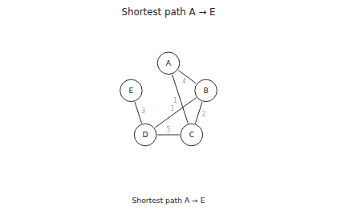

vlmkit-anim check
An algorithm as a checked animation
One JSON scene (a kind plus intent, never coordinates) compiles to SVG and Web Animations, a GIF, or a still. check validates it, runs semantic checks on the frames, and reports layout problems.
Open the scene · packages/vlmkit-anim/fixtures/graph-dijkstra.json · broken.json · graph-dijkstra.gif

Run it
vlmkit-anim check packages/vlmkit-anim/fixtures/graph-dijkstra.json
vlmkit-anim check examples/demos/anim/broken.json
vlmkit-anim video (pnpm anim:samples).What to look at
The scene is Dijkstra on five nodes: 363 bytes of intent that compile to a 10,850-byte timeline of 15 steps. The second run is the same scene with its last edge pointed at a node F that does not exist (broken.json): check exits 1, names the field, and suggests the known nodes.
The fix
In the broken copy, point edges[5].to back at E.
What vlmkit printed
vlmkit-anim check packages/vlmkit-anim/fixtures/graph-dijkstra.json · exit 0
✓ graph-dijkstra.json (graph): 0 error(s), 0 warning(s) 8400ms · 15 steps (14 captioned) · 24 nodes · 28 tracks / 115 keyframes scene 363 B (minified) → timeline 10850 B (×29.9) next: vlmkit-anim explain packages/vlmkit-anim/fixtures/graph-dijkstra.json · vlmkit-anim render packages/vlmkit-anim/fixtures/graph-dijkstra.json --step N · vlmkit-anim html packages/vlmkit-anim/fixtures/graph-dijkstra.json --out page.html
vlmkit-anim check examples/demos/anim/broken.json · exit 1 — the command fails, as a gate in CI would
✗ edges[5].to: unknown node "F"
→ did you mean "A"? known nodes: "A", "B", "C", "D", "E"
✗ 1 error(s): fix these before the semantic checks can run